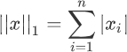
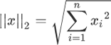
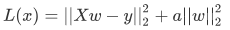
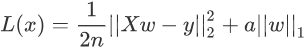

sklearn应用Logistic回归算法
在 Scikit-Learn 机器学习库中，有关线性模型的算法族都在
损失函数的左侧与线性回归算法的损失函数一致。只是在最后添加右侧的 L2 正则项，其中 a 只是一个常数，需要根据经验设置。
机器学习中有许多的算法，我们不能评价一个算法的优劣性，因为算法只有合适与不合适，每个算法都有其适用的场景。因此，我们不能仅依据模型评分来评价模型的好与坏。这就好比从每个班级中选出数学非常优秀的学生去参加数学竞赛一样，如果竞赛的第一名只得了 60 分，而其余学生都不及格，那你会说他们都是是个差生吗，因此，在后续学习机器学习算法的过程中要牢记这一点。
linear_model模块下，不同的算法又会分化为很多类，但它们都是经过几种基本算法调整和组合而成，因此基本上都是大同小异，换汤不换药，下面介绍经常用到回归类算法，其中就包含了 Logistic 回归算法。在这之前我们需要先熟悉几个概念，比如“正则化”。什么是范数？
范数又称为“正则项”，它是机器学习中会经常遇到的术语，它表示了一种运算方式，“范数”的种类有很多，不过常见的范数主要分为两种：L1 和 L2。下面我们来分别认识一下它们。1) L1范数
L1 范数非常容易理解，它表示向量中每个元素绝对值的和，根据定义，L1 范数的计算分两步，首先逐个求得元素的绝对值，然后相加求和即可。下面给出了 L1 范数正则化定义的数学表达式，如下所示：

注意：此时两个绝度值符号，是符合范数规定的，两个绝对值符号表示范数。
2) L2范数
L2 范数出现的频率更高，表示向量中每个元素的平方和的平方根。根据定义，L2 范数的计算分三步，首先逐个求得元素的平方，然后相加求和，最后求和的平方根。L2范数正则化定义的数学表达式如下：

回归类算法
除了“线性回归算法” 也就是“最小二乘法”之外（具体可以参见《线性回归数学解析》一节），还有以下常用算法：1) Ridge类
Ridge 回归算法，又称“岭回归算法”主要用于预测回归问题，是在线性回归的基础上添加了 L2 正则项，使得权重 w 的分布更加均匀，其损失函数如下：

损失函数的左侧与线性回归算法的损失函数一致。只是在最后添加右侧的 L2 正则项，其中 a 只是一个常数，需要根据经验设置。
注意，线性回归函数的 1/n 在优化过程的运算中不会影响结果，它只是一个常量而已，而常量的导数是 0。
2) Lasso类
Lasso 回归算法：我们知道，常用的正则项有 L1 和 L2，而使用了 L1 正则项的线性回归是 Lasso 回归算法，它可以预测回归问题，其损失函数的表达式如下（求最小损失值）：

上述表达式的左侧与 Ridge 回归算法的损失函数基本一致，只是将右侧的 L2 范数替换成了 L1 范数，而且左侧式子相比线性回归表达式而言，多了一个1/2，但实际的优化过程中，它并不会对权重 w 产生影响。
实现Logistic回归
下面使用 skleran 库实现 Logistic 回归算法，首先导入一下模块：from sklearn.linear_model import LogisticRegressionsklearn 库中自带了许多种类的内建数据集，比如波士顿房价数据集，手写数字识别数据集，鸢尾花数据集，糖尿病数据集等，这些数据集对我们学习机器学习算法提供了很好的帮助，节省了我们收集、整理数据集的时间。下面我们以鸢尾花数据集对 Logistic 回归算法进行简单的应用。
#logistic算法
#从 scikit-learn库导入线性模型中的logistic回归算法
from sklearn.linear_model import LogisticRegression
#导入sklearn 中的自带数据集 鸢尾花数据集
from sklearn.datasets import load_iris
# skleran 提供的分割数据集的方法
from sklearn.model_selection import train_test_split
#载入鸢尾花数据集
iris_dataset=load_iris()
# data 数组的每一行对应一朵花，列代表每朵花的四个测量数据，分别是：花瓣的长度，宽度，花萼的长度、宽度
print("data数组类型: {}".format(type(iris_dataset['data'])))
# 前五朵花的数据
print("前五朵花数据:\n{}".format(iris_dataset['data'][:5]))
#分割数据集训练集，测试集
X_train,X_test,Y_train,Y_test=train_test_split(iris_dataset['data'],iris_dataset['target'],random_state=0)
#训练模型
#设置最大迭代次数为3000，默认为1000.不更改会出现警告提示
log_reg = LogisticRegression(max_iter=3000)
#给模型喂入数据
clm=log_reg.fit(X_train,Y_train)
#使用模型对测试集分类预测,并打印分类结果
print(clm.predict(X_test))
#最后使用性能评估器，测试模型优良，用测试集对模型进行评分
print(clm.score(X_test,Y_test))
输出结果如下：data 数组类型: <class 'numpy.ndarray'> 前五朵花数据: [[5.1 3.5 1.4 0.2] [4.9 3. 1.4 0.2] [4.7 3.2 1.3 0.2] [4.6 3.1 1.5 0.2] [5. 3.6 1.4 0.2]] 测试集划分结果： [2 1 0 2 0 2 0 1 1 1 2 1 1 1 1 0 1 1 0 0 2 1 0 0 2 0 0 1 1 0 2 1 0 2 2 1 0 2] 模型评分： 0.9736842105263158scikit-learn 中的 train_test_split 函数可以打乱数据集，并对其进行拆分。该函数默认将 75% 的行数据及对应标签作为训练集，另外 25% 数据作为测试集。
注意：75% 和 25% 这两个数值可以根据实际的情况做相应的调整。
最后，我们对 Logistic 算法做一下简单总结：首先 Logistic 算法适用于分类问题，该算法在处理二分类问题上表现优越，但在多分类（二个以上）问题上容易出现欠拟合。Logistic 算法除了适用于回归分类问题，还可以作为神经网络算法的激活函数（即 Sigmoid 函数）。机器学习中有许多的算法，我们不能评价一个算法的优劣性，因为算法只有合适与不合适，每个算法都有其适用的场景。因此，我们不能仅依据模型评分来评价模型的好与坏。这就好比从每个班级中选出数学非常优秀的学生去参加数学竞赛一样，如果竞赛的第一名只得了 60 分，而其余学生都不及格，那你会说他们都是是个差生吗，因此，在后续学习机器学习算法的过程中要牢记这一点。
关注公众号「站长严长生」，在手机上阅读所有教程，随时随地都能学习。内含一款搜索神器，免费下载全网书籍和视频。

微信扫码关注公众号